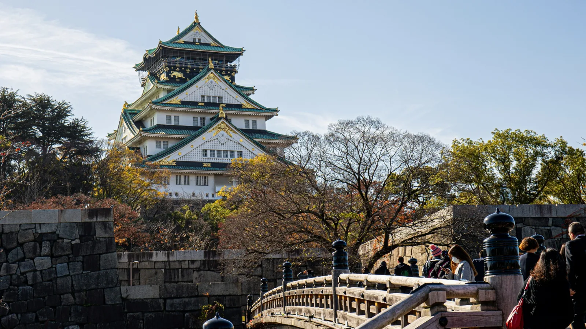

In breve
Il giorno 1 è l'Osaka classica: il Castello di Osaka al mattino, il mercato Kuromon a pranzo, Shinsekai e la torre Tsutenkaku nel pomeriggio e Dotonbori la sera. Il giorno 2 scegli tu: Universal Studios Japan (una giornata intera, da prenotare) oppure il lato moderno: Umeda Sky Building, shopping a Shinsaibashi e Amerikamura. Se dormi a Namba, ogni sera vai a mangiare a piedi.
Come arrivare a Osaka
- Da Tokyo: lo Shinkansen Tokaido arriva a Shin-Osaka in circa 2h30 con il Nozomi; da lì la metro Midosuji porta a Umeda e Namba. Confronta le opzioni in Da Tokyo a Kyoto (Osaka è la fermata dopo) oppure vedi treni e bus Tokyo → Osaka.
- Da Kyoto: 15 minuti in Shinkansen, oppure circa 30 minuti con il JR Special Rapid fino a Osaka (Umeda), senza prenotazione del posto.
- Dall'aeroporto Kansai (KIX): il Rapi:t della Nankai fino a Namba (circa 40 min) oppure il JR Haruka per Tennoji e Shin-Osaka. L'aeroporto di Itami (ITM) è per i voli interni.
Giorno 1: castello, mercati e Dotonbori
- 9:00 Castello di Osaka: prima il parco e i fossati (gratis), poi il museo dentro la torre principale se ti piace la storia.
- 12:00 Mercato Kuromon: pesce alla griglia, spiedini di wagyu e frutta. Vai prima delle 14: molti banchi chiudono nel pomeriggio.
- 14:30 Shinsekai: strade rétro intorno alla torre Tsutenkaku, il posto dei kushikatsu (spiedini fritti; mai intingere due volte nella salsa comune).
- 18:00 Dotonbori: il canale, i neon e l'insegna dell'omino Glico. Mangia lungo la strada: takoyaki, okonomiyaki, ramen. Il vicolo Hozenji Yokocho è una pausa tranquilla tra le lanterne.
Giorno 2: Universal Studios oppure Osaka moderna
Opzione A, Universal Studios Japan: una giornata intera. I biglietti sono a data e nei weekend e nelle festività si esauriscono; per Super Nintendo World spesso serve un ingresso a orario o un Express Pass. Prenota i biglietti USJ in anticipo e arriva prima dell'apertura.
Opzione B, Osaka moderna: l'osservatorio Floating Garden dell'Umeda Sky Building (il tramonto è il momento migliore), i caffè di Nakazakicho, poi shopping lungo Shinsaibashi-suji e lo stile di strada di Amerikamura. Con mezza giornata in più, Nara (cervi e Todai-ji) è a circa 40 minuti da Namba con il treno Kintetsu.
Cosa mangiare a Osaka
| Piatto | Dove |
|---|---|
| Takoyaki (polpette di polpo) | Chioschi di Dotonbori |
| Okonomiyaki (frittata salata) | Dotonbori, Umeda |
| Kushikatsu (spiedini fritti) | Shinsekai |
| Pesce e wagyu | Mercato Kuromon |
Menu solo in giapponese? Leggi la nostra guida al menu in inglese e le frasi per il ristorante.
Come muoversi
La linea Midosuji della metro collega Shin-Osaka, Umeda, Shinsaibashi, Namba e Tennoji: è la spina dorsale della visita. Paga con una carta IC (Suica, PASMO o ICOCA vanno tutte bene). Se in un giorno vuoi vedere molte attrazioni, l'Osaka Amazing Pass include metro e bus illimitati e l'ingresso gratuito a molti luoghi.
Dove dormire
Namba / Shinsaibashi è la zona migliore per cibo e vita serale e ha treni diretti per l'aeroporto Kansai. Umeda è meglio per i collegamenti (JR, Kyoto, Kobe) e le gite. Confronta gli hotel a Osaka.
Consigli
- Stai organizzando un viaggio più lungo? Segui Tokyo, Kyoto e Osaka in 7 giorni e Kyoto in 2 giorni.
- Non sai se fare il JR Pass? Leggi Il JR Pass conviene?
- Tifoni e piogge forti possono fermare i treni: leggi gli avvisi di sicurezza in Giappone.
Orari, prezzi e regole sono indicativi e possono cambiare: controlla sempre prima di partire.
Verificato sulle fonti ufficiali. Regole e prezzi cambiano: controlla sempre su questi siti prima di partire.
Organizza il viaggio a Osaka
Alcuni link sono affiliati: se prenoti tramite loro non paghi nulla in più e aiuti 687 a restare gratuito.
Due giorni a Osaka, già in ordine.
In 687 Japan le giornate a Osaka hanno le visite nell'ordine giusto, le linee della metro tra una e l'altra e dove mangiare vicino quando hai fame. Se pioggia o code cambiano i piani, NOW ricostruisce il resto della giornata.
Fonti
Verificate su questi siti ufficiali a novembre 2026. Prezzi e regole possono cambiare: controlla sempre prima di partire.